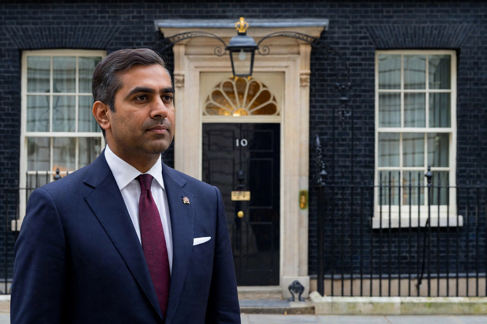

Rishi Sunak

| Rishi Sunak | |
|---|---|
| Born | 12 May 1980, Southampton, England |
| Political party | Conservative |
| Prime Minister | 25 October 2022 – 5 July 2024 |
| Preceded by | Liz Truss |
| Succeeded by | Keir Starmer |
| Education | Winchester College; Lincoln College, Oxford; Stanford University |
| Spouse | Akshata Murty |
| Constituency | Richmond (Yorks), later Richmond and Northallerton |
Rishi Sunak (born 12 May 1980) is a British politician who served as Prime Minister of the United Kingdom and Leader of the Conservative Party from October 2022 to July 2024. He previously served as Chancellor of the Exchequer under Boris Johnson from 2020 to 2022, and has been the Member of Parliament for Richmond in North Yorkshire since 2015.
Sunak was the first British Asian and the first Hindu prime minister of the United Kingdom, as well as one of the youngest in modern times, taking office at the age of 42.
1 Early life and education
2 Business career
3 Political career
4 Premiership
5 2024 general election and afterwards
Early life and education
Sunak was born in Southampton to Indian parents who had emigrated from East Africa; his father was a general practitioner and his mother ran a pharmacy. He was educated at Winchester College, read philosophy, politics and economics at Lincoln College, Oxford, and later earned an MBA from Stanford University as a Fulbright scholar, where he met his wife, Akshata Murty, daughter of Infosys co-founder N. R. Narayana Murthy.
Business career
Before entering politics Sunak worked as an analyst at Goldman Sachs and later as a partner at hedge funds including The Children's Investment Fund Management. He also co-founded an investment firm.
Political career
Sunak was selected as the Conservative candidate for Richmond (Yorks), a safe seat previously held by William Hague, and was elected at the 2015 general election. He supported Brexit in the 2016 referendum. He rose quickly through junior ministerial posts before becoming Chief Secretary to the Treasury in 2019.
Chancellor of the Exchequer
Following Sajid Javid's resignation in February 2020, Sunak became Chancellor. Weeks later the COVID-19 pandemic struck, and Sunak introduced large-scale support measures including the Coronavirus Job Retention Scheme (the "furlough scheme"), the Eat Out to Help Out scheme, and emergency business loans. His personal popularity was initially high, though he later received a fixed penalty notice for attending a gathering in Downing Street during lockdown ("Partygate"). He resigned as Chancellor on 5 July 2022, helping to precipitate Johnson's downfall, then lost the summer 2022 leadership contest to Liz Truss.
Premiership
After Truss resigned amid market turmoil in October 2022, Sunak was elected unopposed as Conservative leader and became prime minister on 25 October 2022. He pledged "integrity, professionalism and accountability" and focused on stabilising the economy, halving inflation, stopping small-boat Channel crossings (including the controversial Rwanda asylum plan), cutting NHS waiting lists, and reducing national debt. His government passed the Safety of Rwanda Act in 2024 after the Supreme Court had ruled the original policy unlawful.
2024 general election and afterwards
Sunak called a general election for 4 July 2024. The Conservatives suffered their worst-ever defeat, winning 121 seats, and Labour under Keir Starmer won a landslide. Sunak resigned as prime minister on 5 July 2024 and as party leader after a successor process, remaining an MP on the backbenches. He subsequently took up roles including a position at Goldman Sachs.